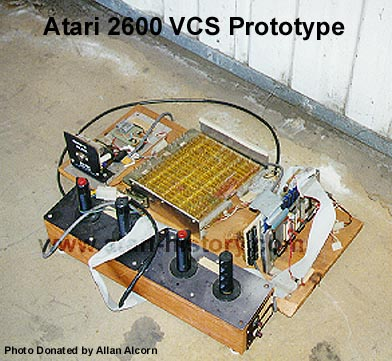

The above photo is one of the original wirewrapped prototypes for "The Worlds Most Popular Video Game" aka... The Atari Video Computer System (VCS) Model #2600. The interesting and eye catching part of the unit besides the extremely intricate hand wired area (TIA perhaps?) are the controllers, you look and say "Hey those don't look like the standard CX-40 joysticks I've come to know and love all these many years!" The controllers are actually from the Atari/KeeGames TANK coin-op arcade game. The actual Atari VCS joysticks would later come from a home console game of TANK which was sold under the Sears exclusive brand label. The Atari Tank joysticks for a one player would act as left and right treads on the home tank game and then they popped out of the rectangular home console and could be used for two player action and would allow each user to use one joystick just like Atari VCS Combat (CX-2601).
The above prototype designed by Ron Milner and Steve Mayer in Grass Valley, Ca. at Cyan Engineering (a company owned by Atari, Inc.)is actually a combination of many parts. The wirewrap board was the original version of the STELLA chip. The boards to the right are a memory board and a "Jolt" 6502 board (one of the first home computer boards) and on the far left is a 5v power supply. The above Stella prototype had actually been thrown out in the garbage at Atari at one point. Owen Rubin, one of Atari's first programmers had found it in the trash and recovered this piece of history and placed it into the safe hands of Atari's Employee #3, who built the first Atari Pong, Allan Alcorn.